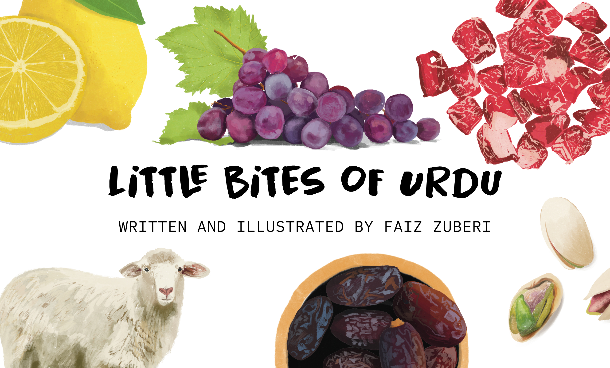
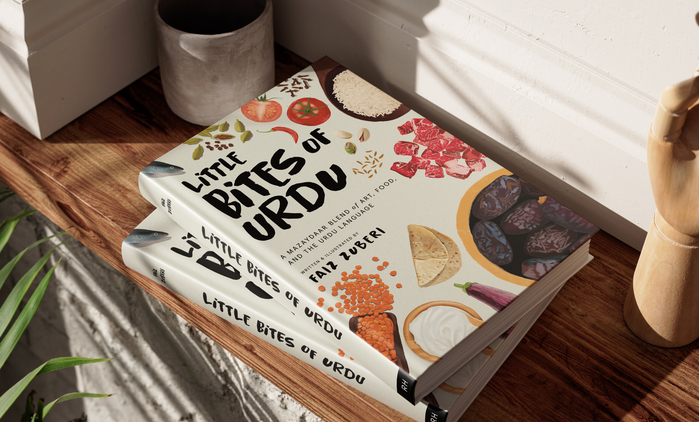
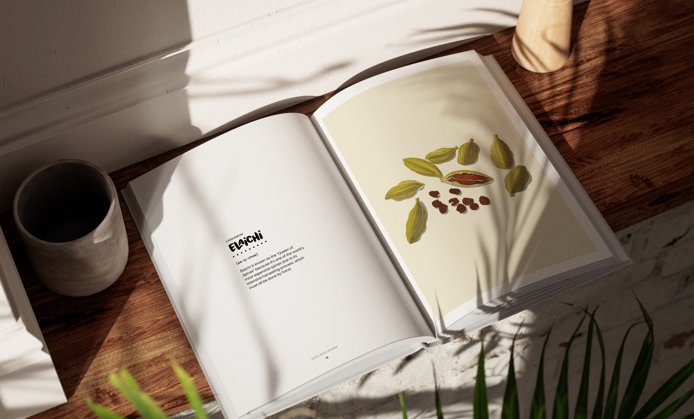

Little Bites of Urdu
Designing a premium cultural artifact for the Pakistani-American diaspora.


Introduction
Little Bites of Urdu is a 220-page, high-end coffee table book designed to bridge the gap between cultural heritage and modern aesthetics. What began as a personal project to teach my daughter Urdu evolved into a sophisticated visual archive of language, food, and nostalgia. By combining hand-drawn illustrations with a minimalist design sensibility, the project serves as a premium cultural artifact for the Pakistani-American diaspora.

Problem
Within the South Asian diaspora, there is a visible "language gap." First and second-generation immigrants often struggle to maintain their native tongue, and their children have even fewer accessible touchpoints.
From a design perspective, the market for Urdu educational materials was underwhelming. Most available resources were:
- Low Production Value: Printed on thin, low-quality paper with subpar binding.
- Aesthetically Dated: Utilizing clip-art or uninspired layouts that didn't appeal to a modern design-conscious audience.
- Inaccessible: Heavily reliant on script, which can be a barrier to entry for those who only speak or understand the language phonetically.
- AI Slop: Now with AI being accessible and "good enough," almost all the work I noticed had that AI look.
Vision
As a designer, my "high bar" for quality dictated the project's north star: to create a book that readers would be proud to display. The goal was to move Urdu off the "textbook shelf" and onto the "coffee table." The vision shifted from a simple children's primer to a high-quality lifestyle book, utilizing Roman Urdu to ensure maximum accessibility and focusing on kitchen-related "vignettes" to trigger nostalgia and screen-free family connection.
Process
The creative journey was defined by a major strategic pivot:
- Ideation: Started as "My First 100 Urdu Words" for children, inspired by naming kitchen ingredients for my daughter during covid.
- Production: I hand-drew 100 unique illustrations, ensuring each captured the "whimsy" of the ingredient while maintaining a professional, clean aesthetic.
- The Pivot: After sharing the 100-page draft with peers, I received critical feedback: the hand-drawn art and high-level design were "too good" for a children's book to sit on a shelf. The target audience shifted from children to adults/families who value art and cultural preservation.
- Design Strategy: I leaned into the "Double Entendre" of the title. Little Bites refers to both the culinary subject matter and the "digestible," accessible nature of the phonetic Urdu used throughout the book.
Printing Process
Because the book was intended as a premium object, the physical production was as important as the digital files.
- Global Coordination: I partnered with printers in China, managing the entire production cycle remotely.
- Quality Control: Without on-site supervision, I relied on an iterative process of video proofing, high-resolution photography, and physical samples to verify paper weight, texture, and binding durability.
- Color Fidelity: A key challenge was ensuring the vibrant, hand-drawn illustrations translated accurately from screen to CMYK print, maintaining the warmth and "soul" of the original sketches.
Execution
One of the most significant design decisions was the exclusion of Urdu script in favor of Roman Urdu.
- The Rationale: This was a deliberate choice to prioritize "approachability." By removing the intimidating barrier of the Urdu script, I was creating a tool that anyone, regardless of literacy level, could pick up and enjoy.
- The Result: A minimalist, clean layout that focuses on the relationship between the illustration and the phonetic sound, fostering an immediate connection to the culture.
Retrospective
Little Bites of Urdu stands as a testament to the power of design in cultural preservation.
- Successes: The pivot to a coffee table format successfully elevated the perceived value of the work, transforming it from a "teaching tool" into a "heritage piece." The name and branding effectively communicated the book's dual purpose: culinary exploration and linguistic "bites."
- Lessons Learned: Navigating the "controversial" decision to omit the Urdu script taught me the importance of standing by a design vision when it serves the ultimate goal of accessibility.
- Impact: We've sold 500 copies with no marketing or advertising, purely through word-of-mouth. The project proved that there is a hunger for high-quality, well-designed cultural products within the diaspora. It provides a sense of pride for owners, offering a high-fidelity window into a language that many feared they were losing.